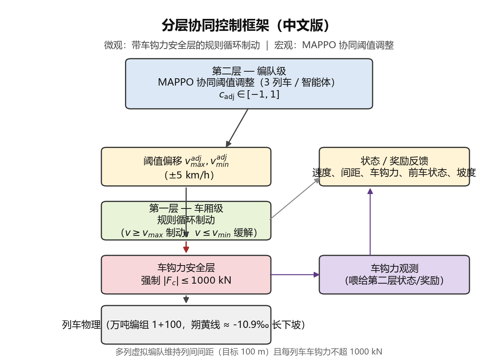
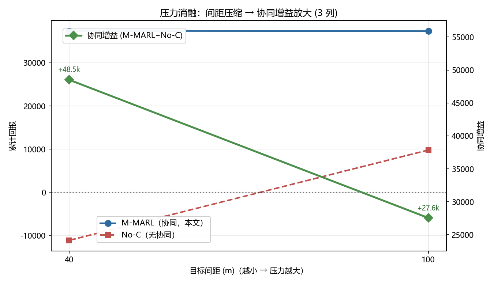

面向长大下坡场景基于
多智能体强化学习的重载列车
群组自动控制方法
汇报人 ｜ 汇报人姓名
日 期 ｜ 2026-08-30
开场30秒：题目是老师给定的方向，我完成仿真器搭建、方法实现和全部实验。今天约20分钟，重点讲结果和拿不准的问题。
今天讲什么：四件事
① 难在哪
三个耦合：下坡↔循环制动 · 循环制动↔车钩力 · 多车间距↔循环制动
② 怎么做
自研仿真器 + 分层方法（规则循环制动 + MAPPO）+ 训练流程
③ 结果咋样
主结果 / 追尾机理 / 鲁棒性 / 压力消融 / 规模扩展 / 泛化
贡献归属
导师给定：题目与方向。本人完成：仿真器 / 实现 / 全部实验 / 统计检验
确立位置：老师定方向，我完成实现与验证。两头都清楚最自信。
Part 01 · 问题与难点
长大下坡的重载列车群组：三个物理事实
海拔：吃重力但只能减速
重载列车长大下坡不能靠牵引调速，只能用 循环空气制动——调速非对称，只能减速不能自由加速
长度：一串 4 公里
万吨列车 ≈ 101 节 ≈ 1.2 km；制动/缓解命令沿车列有限速度传播（200 m/s）→ 纵向冲动 + 车钩力
编队：自己控好不够
多列虚拟编队运行，后车 既控速度又跟车间距；独立制动相位错开 → 追尾
关键一句：单列控制是经典问题，多列编队把「自己控好」变成「协同别撞」。
朔黄线长大下坡线路剖面示意（含多列虚拟编队）
三个物理事实：要吃坡度但只能循环制动；长车列制动波传播产生车钩力；多列编队要协同防追尾。
Challenge · 难点
三个耦合：问题难在「缠在一起」
长大下坡
↔ 循环制动
只能减速、不能靠重力提速，调速 非对称
循环制动
↔ 车钩力
制动波/缓解波传播造成 纵向冲动，车钩力可能超限
多车间距
↔ 循环制动
后车看不见前车意图，独立制动 相位错开 → 追尾
关键一句：前两个耦合决定「单列车安不安全」，第三个耦合决定「多列车 撞不撞」——协同防追尾是核心要解决的。
前两个归单列车安全，第三个归多列车追尾。
Related Work · 现有工作
三类工作各缺一块：交叉空白正是题目落点
| 类别 | 代表工作 | 做了什么 | 缺什么 |
|---|
| 单列车长大下坡 RL | Zhang2024 DQN、Wang2025、Liu2021 | 用 DQN/PPO 学习循环制动 | 忽略车钩力，列车视为单质点 |
| 虚拟编队 MARL | Zhang2021、Guo2025、Hua2024、Song2026 | 多智能体协同保持队形 | 面向城轨/汽车；无车钩力，假设可自由加减速 |
| 车钩力优化 | Wei2024(QP)、Fu2019(GA) | 单列车车钩力约束下操纵优化 | 仅限单列车，基于模型，未扩到多列 |
关键一句：还没有一个工作把 多列编队 + 长大下坡 + 显式车钩力建模 同时做出来——这正是老师给定题目所指的位置。
归属提示：调研在老师给定方向下做。三类各缺一块，交叉空白正是题目落点。
Part 02 · 我怎么做的
Method · 核心思路
分层架构：物理层保安全，RL 层做协同
①
每控制周期 dt=0.1s · 观测 oᵢ（11 维）
速度误差 · 间距误差 · 车钩力 · 位置 · 尾部坡度 · 前车速度 · 前车制动强度
▼
②
第 2 层：MAPPO（宏观 · 协同）
每列车 1 个智能体，共享策略；输出 c_adj ∈ [-1,1]
▼
⇅
映射 v_adj = 0.3 × c_adj × 5 km/h
阈值偏移，最大 ±1.5 km/h
▼
③
第 1 层：规则循环制动（微观）
v ≥ v_max+v_adj → 制动 u=−0.75；v ≤ v_min+v_adj → 缓解 u=0；硬安全层 |F_c|≤1000kN
▼
④
多体动力学积分（101 质点）
牵引 − Davis阻力 − 制动 − 坡度 + 车钩力 ＋ 制动波/缓解波传播延迟
▼
R
奖励 R_t（5 项加权）＋ 下一状态 → 回到 ①
每控制周期重复

分层 MARL 框架总览
| 层 | 职责 | 关键设计 |
|---|
| 第 1 层（微观） | 速度控制 + 车钩力安全 | 规则循环制动行业标准；硬安全层兜底 |
| 第 2 层（宏观） | 多列协同防追尾 | MAPPO 学阈值偏移 → 错峰制动 |
| 接口 | 两层解耦 | RL 不直接控油门，只调阈值 → 可解释 + 易学 |
关键一句：安全由物理层 硬保证，协同由 RL 学习；两者不互相甩锅——这是整个方法最核心的设计。
归属提示：分层思路若老师提出则口播「在老师思路下完成实现与验证」。左列决策流程，右列架构图+职责表。
Simulator · 自研仿真器
自研多体纵向动力学仿真器（101 质点 + 空气制动波）
输入层
线路剖面 朔黄线23.8km/20km编组 1机车+100货车·万吨控制指令 throttle∈[-1,1]
▼
物理建模层（自研核心）
多体纵向动力学 101 质点空气制动波传播 200m/s车钩力 弹簧-阻尼+间隙死区运行阻力 Davis+坡度
▼
积分输出层
半隐式 Euler · dt=0.1s输出 速度/位置/车钩力/加速度
▼
验证层：五重文献对照（→ 下一页）
| 模块 | 建模方法 | 关键参数 |
|---|
| 多体纵向动力学 | 每节车厢独立质点 | 101 质点 · 机车200t/货车80t |
| 车钩力 | 弹簧—阻尼 + 间隙死区 | 刚度 k · 阻尼 c · 间隙 gap |
| 空气制动 | 制动波沿车列有限速度传播 | 200 m/s（紧急 250 m/s） |
| 缓解波 | 波前连续传播，到达即缓解 | 1221 m 车列 ≈ 6 s |
| 运行阻力 | Davis 公式 a+bv+cv² | 标准 Davis 形式 |
| 坡度 | 分段线性剖面 | 朔黄线主坡 −10.9‰ |
| 数值积分 | 半隐式 Euler | dt = 0.1 s |
mᵢ ẍᵢ = F_t,i − F_r,i − F_b,i − F_g,i + F_c,i−1 − F_c,i
101 质点多体纵向动力学核心方程
仿真器是最大独立工作量，最该讲足。左列架构流程，右列模块表+核心方程。口播点到为止。
Simulator · 自研仿真器
凭什么信它：五重文献验证 + 三个已知偏差
| 验证项 | 对照 | 结果 |
|---|
| 缓解波传播 | 理论波速 200 m/s | 1221m 车列 ~6s ✅ |
| 制动减压→压钩力单调 | Zhang2025 | 单调 ✅ |
| 车钩间隙0.01m→力+52kN | 杨敏 | 复现 ✅ |
| 车钩力上限1000/2250kN | Fu2019+铁科院+朔黄线 | 一致 ✅ |
| 朔黄线实测量级对比 | 张二田 929–1748kN | 仿真527/597kN ⚠ |
关键一句：仿真器 相对比较（M1 vs M3 同一仿真器）公平；但 绝对安全裕度（804kN 离 1000kN 多近）取决于动力学参数绝对正确性——想让老师把关。
三个已知偏差 · 主动暴露
偏差① 车钩力系统性偏低约 40%
朔黄线2万吨实测 929/1021kN，我们1万吨仿真 527/597kN。无法区分是「编组规模差异」还是「动力学参数偏软」。
偏差② 小编组量化偏大
6节车 25m/s 强制动峰值超1000kN，而论文216节 50kPa 才678.7kN。解释为「冲击更集中」，未验证。
偏差③ 双源制动拉高中部车钩力
355→360kN，与樊运新「尾部动力降冲动58.8%」表面矛盾；解释为「两端同时制动拉伸中部」，物理自洽但未证实。
主动暴露偏差=有批判性，被追问=隐瞒。三个偏差都讲，尤其低40%直接关系安全裕度可信度。
Training · 训练流程
MAPPO + Curriculum：短训长评的缺口被闭环
初
初始化
共享策略 π_θ + 集中式评论家 V_φ · 3 个种子独立训练
▼
CL
Curriculum 课程学习（关键）
horizon 逐步拉长 300 → 1000 → 3000 步，解决短训长评失败
▼
▼
▼
③
PPO clip 更新 · ε=0.2 4 epochs
▼
④
KL>0.015 → 提前停止 · 保存 best+final
▼
评
全程评估（确定性策略 3000 步）
回报 / 追尾 / 峰值车钩力 / 最小间距
| 配置 | 取值 |
|---|
| 算法 | MAPPO（共享策略+集中式评论家） |
| 智能体划分 | 每列车 1 个，3 列（扩展 5 列） |
| 观测维度 | 11 维（速度/间距误差/车钩力/位置/坡度/前车状态） |
| 动作 | c_adj ∈ [-1,1] 连续阈值偏移 |
| 奖励 | 5 项加权：速度带+间距+一致性+追尾势场+车钩力 |
| 训练回合 | 600 episodes / seed |
| 课程 horizon | 300 → 1000 → 3000 步 |
| lr / 熵系数 | 5×10⁻⁵ / 0.001 |
| GAE / γ / ε | 0.95 / 0.99 / 0.2 |
| 种子数 | 训练 3 / 评估 10 / 追尾 50 |
口播（30秒）：每列车一个智能体但共享策略，关键设计是 horizon 从 300 逐步拉到 3000 的课程学习——直接短训长评有 1/3 种子失败，课程后 3 个种子全过。
左列训练闭环，右列配置表。MAPPO 的 KL/GAE 一句话带过，重点是 MAPPO 学到了什么。
Part 03 · 结果怎么样
Main Result · 主结果
M1 零追尾，其余全部追尾（3 列 · 固定初态 65 km/h · 3000 步）
| 指标 | Coast | M1 | M3 | M4 | M-DQN-fair | M-DQN |
|---|
| 累计回报 | +27,950 | +36,446 | −31,151 | −33,991 | −38,432 | −606,185 |
| 超速 >80 km/h (%) | 5.3 | 1.3 | 0.8 | 0.8 | 0.8 | — |
| 低速 <40 km/h (%) | 0.0 | 0.9 | 4.5 | 4.5 | 4.7 | — |
| 峰值车钩力 (kN) | 651 | 804 | 734 | 734 | 900 | 2,111 超限 |
| 最小列间距 (m) | 182 | 182 | −321 | −321 | −347 | −234 |
| 追尾步数 | 0 | 0 | 202 | 202 | 229 | 1,434 |

- 看追尾步数：M1=0，其余全部追尾——最重要
- 看最小间距：M1 维持 182 m，M3/M4 跌到 −321 m（崩溃）
- 看车钩力：含安全层都 <1000kN；缺安全层 M-DQN 超限到 2,111 kN
关键一句：公平 DQN 与我们 同架构、同奖励、同安全层，只把 MAPPO 换 DQN 仍追尾——优势来自 MAPPO 算法，非分层本身。
预判提问：M3 比 Coast 差？差值全来自碰撞惩罚，M3 非碰撞种子约+35k，碰撞种子崩到-30k——尾部风险核心证据。
Mechanism · 追尾机理
2400 步前没差别，2400 步后 M3 间距突然崩溃
关键一句：危险不是一直存在，而是在某个 相位错开的瞬间突然爆发——这正是「尾部风险」的具象。
前2400步 M1 与 M3 几乎一致；此后 M3 后车看不到前车制动意图、独立制动相位错开致最小间距跌破零。M1 通过协同阈值调整让各列车制动/缓解相位错开。
| 方法 | 间距崩溃后速度表现 |
|---|
| M3 | 领头车速度掉到 0（碰撞惩罚主导） |
| M1 | 维持正常循环制动波形，速度在 [40,80] km/h 波动 |
动态过程最有说服力。展示轨迹图中崩溃点。可选补 speed 轨迹。
Robustness · 鲁棒性
平均不显著，但尾部风险差异高度显著
| 方法 | 追尾种子 | 追尾率 | 95% CI |
|---|
| M1 | 0/50 | 0% | [0.0, 7.1]% |
| M3 | 17/50 | 34% | [22.4, 47.8]% |
| 统计量 | 取值 |
|---|
| Fisher 精确检验 | p < 0.00001 |
| Cohen's h | 1.25（大效应量） |
| 风险差 | 0.34，95% CI [0.21, 0.47] |
口径说明：回报用 10 种子（各3000步），追尾用 50 种子（二值、计算便宜）——样本量不同是有意为之。
平均 t 检验不显著因为 M3 非碰撞种子 reward 也高；但尾部风险差异统计显著——关键论点。
Ablation · 压力消融
越压，协同越有价值：协同增益单调增长
| 目标间距 | M1 | M3 | 协同增量 | M3追尾 |
|---|
| 100 m | +36,446 | −31,151 | +67,597 | 202 |
| 80 m | +36,477 | −38,630 | +75,107 | 226 |
| 60 m | +36,507 | −46,191 | +82,698 | 264 |
| 50 m | +36,524 | −49,772 | +88,916 | 285 |
| 40 m | +36,542 | −53,046 | +89,588 | 305 |
- M1 回报几乎不变（+36,446→+36,542）且从不追尾 → 对压力稳健
- 协同增益单调增长（+67,597→+89,588）→ 压力越大协同越值

间距 100→40m 增益单调；M1 只在100m训练，能泛化到40-80m → 可迁移
两句话：M1回报几乎不变且从不追尾；协同增益单调增长。补：M1只在100m训能泛化到40-80m。
Scalability · 规模扩展
3 列 → 5 列：协同增量几乎一致，方法可扩展
| 编队 | M1 | M3 | 协同增量 | M-DQN |
|---|
| 3 列 | +36,446 | −31,151 | +67,597 | −606,185 |
| 5 列 | +72,572 | +4,977 | +67,595 | −739,997 |
关键一句：5 列协同增量（+67,595）与 3 列（+67,597）几乎一致——方法可扩展到更大编队，且 M1 仍 零追尾、车钩力 804 kN。
一句话：5列协同增量与3列几乎一致，方法可扩展。
Generalization · 训练泛化
Curriculum 闭环了「短训长评」的泛化缺口
| 训练方式 | 全程评估 | 结论 |
|---|
| 固定 300 步训练 → 3000 步评估 | 1/3 种子失败 | 短训长评有泛化缺口 |
| Curriculum（300→1000→3000） | 3/3 种子通过 | 课程闭环缺口 |
关键一句：训练不是跑满长 horizon，而是 先短后长逐步扩展——这一点在论文里也算一个方法贡献。

M1 多 seed 学习曲线：Curriculum 后稳定收敛到长 horizon
训练是先短后长逐步扩展，非跑满长horizon。这个是方法层分量。
Limitation · 第二剖面与局限
20 km 第二剖面复现 M1 优势；局限主动说
第二剖面（20 km · −9.5~−11.5‰ · 10 随机种子）
| 指标 | M1 | M3 | M-DQN-fair |
|---|
| 回报（均值±std） | +34,311±7,621 | +28,464±15,284 | +25,097±18,545 |
| 追尾步数 | 1.6±8.6 | 13.9±31.4 | 23.9±45.9 |
当前局限（主动说，不等被问）
- 场景覆盖：仅 2 个长下坡剖面；编队 ≤ 5 列
- 零样本迁移：极端 40 m 下 100m 训练策略退化
- 验证方式：纯仿真，无实车对照
- 训练种子：目前 3 个（计划补到 5 个）
关键一句：两剖面均验证了 M1 的协同优势（追尾更少、回报更稳）；局限集中在场景覆盖与纯仿真验证——这是最需要老师指导完善的方向。
第二剖面复现 M1 优势，局限主动说（场景覆盖、纯仿真、种子数）。
Part 04 · 请您拍板
Decision · 请老师定优先级
四个待决问题，需要老师判断优先级
| # | 待决问题 | 现状 | 我的倾向 | 需要老师判断 |
|---|
| 1 | 仿真器车钩力比实测低约 40% | 无法区分编组差异 vs 参数偏软 | 校核缓冲器特性曲线 | 参数是否需要重新标定？ |
| 2 | Song2026 是最相关工作但未对比 | 原文细节不足以忠实复现 | 降级措辞 + 补端到端 MAPPO 对比 | 是否值得尝试复现？ |
| 3 | 简化 MPC 结果尚未写入论文 | 已跑出（追尾296、车钩力1246超限） | 上报并标注简化实现 | 是否同意上报？ |
| 4 | 训练种子只有 3 个 | MARL 现行标准 5 个起 | 补到 5 个 | 若时间紧，声明 3 个是否可接受？ |
口播收尾：核心结果我认为比较扎实了。但四个问题我自己拿不准，尤其 第一个仿真器参数问题——它直接影响安全裕度结论的可信度。想请老师判断优先级，以及第一个问题值不值得重新标定。
目的不是汇报计划，而是请老师拍板。四个问题要真的留时间让老师回答。
谢谢
欢迎批评指正 · 请多提宝贵意见
可讨论问题：仿真器绝对精度如何认证？下一步优先级？是否有实车/现场数据可对照？
谢谢 + 3个可讨论问题引导问答。